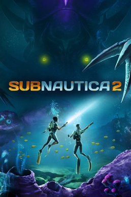

Set on a new planet, Subnautica 2 supports single-player and co-op gameplay with a total of up to four players. This is the first time multiplayer gameplay is present in the series.[2] A cinematic trailer showed a new vehicle, new creatures and environments and hinted at the introduction of an ocean current mechanic that can drag the player to another area.[3] Players are able to modify their own DNA to acquire abilities, a feature that was originally cut from Subnautica.

Very early on you will discover that your body cannot sustain itself on Zezuras moon and requires adaptations to the enviornment. The Angel Combs allow for these adaptations, making it so that the player can digest food survive the atmospheric pressure or even gain incredible heat tolerance. In order to obtain these adaptaions, the player must free the angel comb from the virus infecting it using a Sonic Resonator.